The same PWML drawn by our renderer (left) and by the PathWhiz live viewer (right), with layout metrics. Metrics are counts, not judgements.
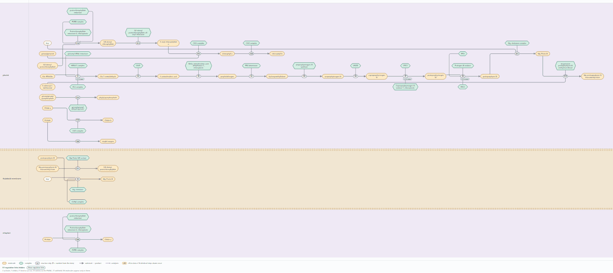
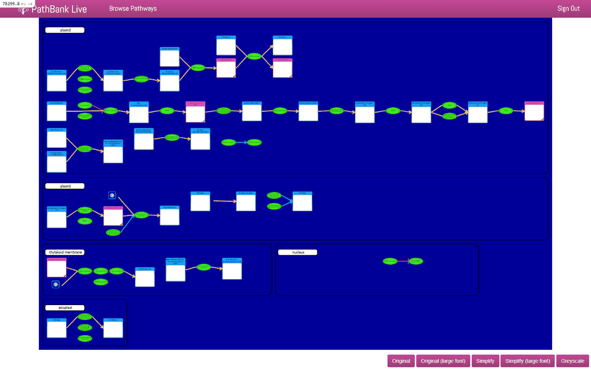
| nodes | 107 |
| node_overlaps | 0 |
| edge_crossings | 0 |
| reading_order_violations | 0 |
| precedence_pairs | 14 |
| labels_too_wide | 0 |
| labels_outside_box | 0 |
| label_node_overlaps | 0 |
| duplicated_compound_locations | 0 |
| enzyme_distance_gt200 | 0 |
| enzymes_drawn | 22 |
| enzyme_distance_max | 151 |
| compartment_boxes | 5 |
| compartment_box_overlaps | 0 |
| unlabeled_compartment_boxes | 0 |
| duplicate_compartment_boxes | 1 |
| aspect_ratio | 2.25 |
| crossings | 15 |
| bends | 27 |
| enzyme_links_gt200 | 1 |
| enzyme_links | 29 |
| enzyme_link_max | 210 |
| node_overlaps | 0 |
| labels_truncated | 0 |
| drawings | 61 |
| imported | True, 49 message(s) |
| compounds created/written | 25/25 |
| proteins created/written | 39/40 |
| protein_complexes created/written | 33/33 |
| reactions created/written | 23/23 |
| interactions created/written | ?/13 |
| compound_locations created/written | 37/37 |
| protein_locations created/written | ?/63 |
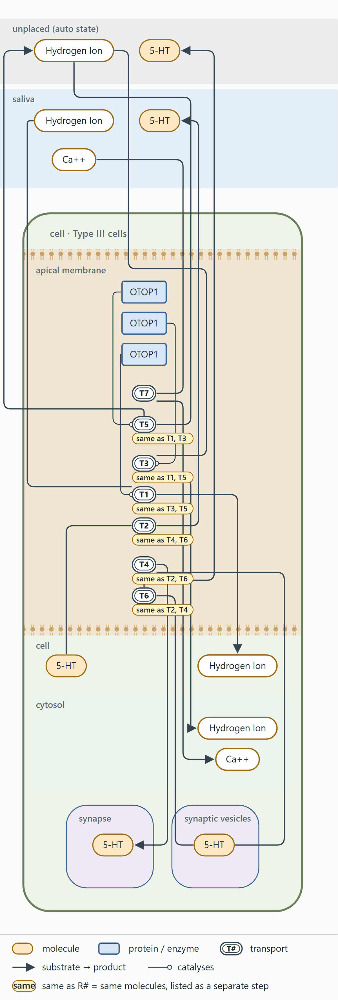
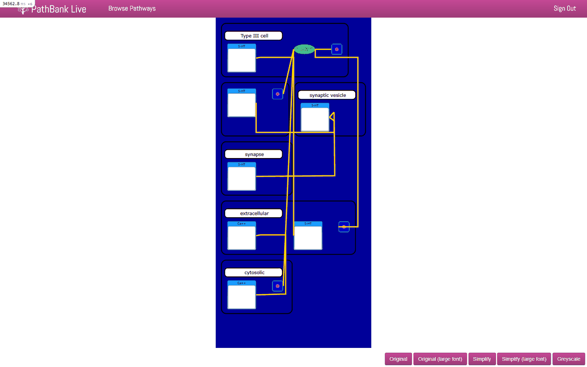
| nodes | 16 |
| node_overlaps | 0 |
| edge_crossings | 9 |
| reading_order_violations | 0 |
| precedence_pairs | 0 |
| labels_too_wide | 0 |
| labels_outside_box | 0 |
| label_node_overlaps | 0 |
| duplicated_compound_locations | 0 |
| enzyme_distance_gt200 | 0 |
| enzymes_drawn | 0 |
| enzyme_distance_max | 0 |
| compartment_boxes | 6 |
| compartment_box_overlaps | 0 |
| unlabeled_compartment_boxes | 1 |
| duplicate_compartment_boxes | 0 |
| aspect_ratio | 0.34 |
| crossings | 34 |
| bends | 38 |
| enzyme_links_gt200 | 0 |
| enzyme_links | 0 |
| enzyme_link_max | 0 |
| node_overlaps | 0 |
| labels_truncated | 0 |
| drawings | 14 |
| imported | True, 7 message(s) |
| compounds created/written | 3/3 |
| proteins created/written | 1/1 |
| protein_complexes created/written | 1/1 |
| transports created/written | 6/7 |
| compound_locations created/written | 12/12 |
| protein_locations created/written | ?/4 |
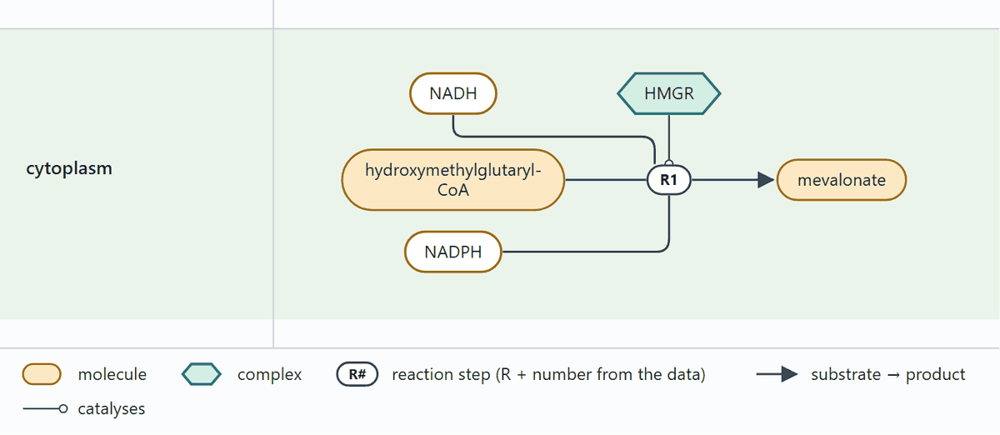
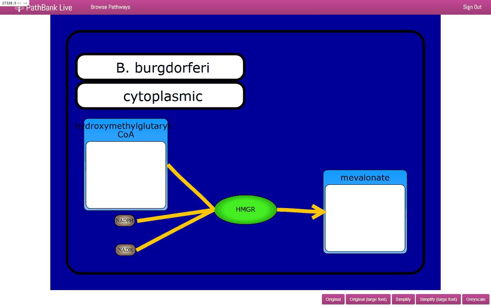
| nodes | 5 |
| node_overlaps | 0 |
| edge_crossings | 0 |
| reading_order_violations | 0 |
| precedence_pairs | 0 |
| labels_too_wide | 0 |
| labels_outside_box | 0 |
| label_node_overlaps | 0 |
| duplicated_compound_locations | 0 |
| enzyme_distance_gt200 | 0 |
| enzymes_drawn | 1 |
| enzyme_distance_max | 143 |
| compartment_boxes | 1 |
| compartment_box_overlaps | 0 |
| unlabeled_compartment_boxes | 0 |
| duplicate_compartment_boxes | 0 |
| aspect_ratio | 2.3 |
| crossings | 0 |
| bends | 3 |
| enzyme_links_gt200 | 0 |
| enzyme_links | 1 |
| enzyme_link_max | 60 |
| node_overlaps | 0 |
| labels_truncated | 0 |
| drawings | 5 |
| imported | True, 0 message(s) |
| compounds created/written | 4/4 |
| proteins created/written | 0/1 |
| protein_complexes created/written | 1/1 |
| reactions created/written | 1/1 |
| compound_locations created/written | 4/4 |
| protein_locations created/written | ?/1 |
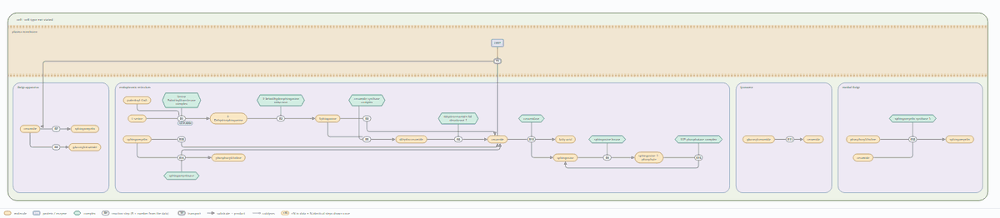
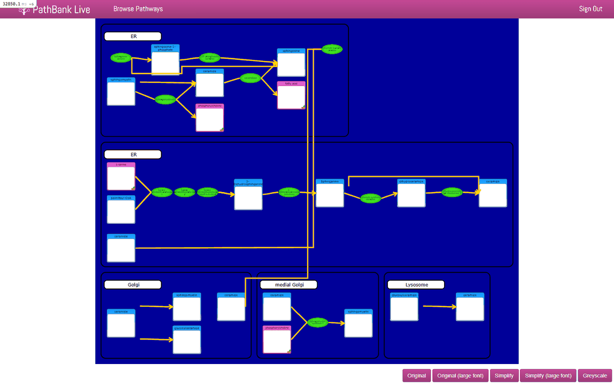
| nodes | 34 |
| node_overlaps | 0 |
| edge_crossings | 4 |
| reading_order_violations | 2 |
| precedence_pairs | 10 |
| labels_too_wide | 0 |
| labels_outside_box | 0 |
| label_node_overlaps | 0 |
| duplicated_compound_locations | 0 |
| enzyme_distance_gt200 | 1 |
| enzymes_drawn | 10 |
| enzyme_distance_max | 750 |
| compartment_boxes | 5 |
| compartment_box_overlaps | 0 |
| unlabeled_compartment_boxes | 0 |
| duplicate_compartment_boxes | 1 |
| aspect_ratio | 4.58 |
| crossings | 3 |
| bends | 18 |
| enzyme_links_gt200 | 0 |
| enzyme_links | 9 |
| enzyme_link_max | 150 |
| node_overlaps | 0 |
| labels_truncated | 0 |
| drawings | 29 |
| imported | True, 1 message(s) |
| compounds created/written | 12/13 |
| proteins created/written | 7/8 |
| protein_complexes created/written | 10/10 |
| reactions created/written | 14/15 |
| transports created/written | 1/1 |
| compound_locations created/written | 22/22 |
| protein_locations created/written | ?/12 |
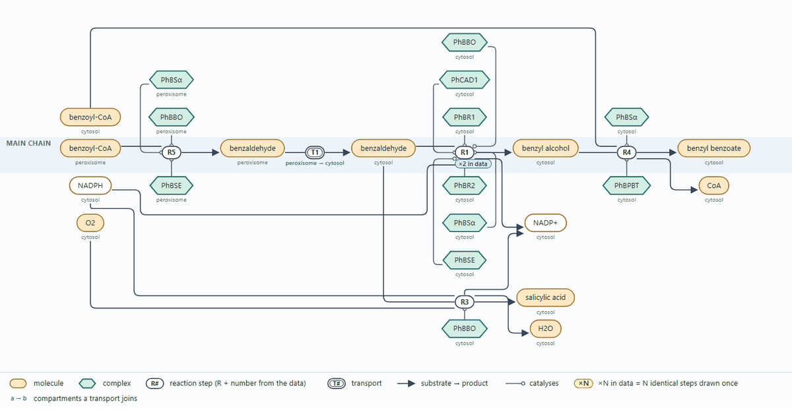
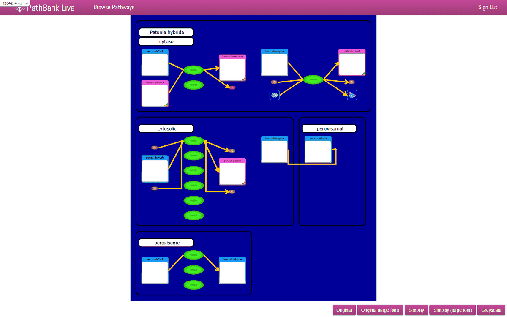
| nodes | 32 |
| node_overlaps | 0 |
| edge_crossings | 6 |
| reading_order_violations | 0 |
| precedence_pairs | 0 |
| labels_too_wide | 0 |
| labels_outside_box | 0 |
| label_node_overlaps | 0 |
| duplicated_compound_locations | 2 |
| enzyme_distance_gt200 | 0 |
| enzymes_drawn | 5 |
| enzyme_distance_max | 84 |
| compartment_boxes | 4 |
| compartment_box_overlaps | 0 |
| unlabeled_compartment_boxes | 0 |
| duplicate_compartment_boxes | 0 |
| aspect_ratio | 1.93 |
| crossings | 7 |
| bends | 32 |
| enzyme_links_gt200 | 0 |
| enzyme_links | 12 |
| enzyme_link_max | 180 |
| node_overlaps | 0 |
| labels_truncated | 0 |
| drawings | 24 |
| imported | True, 1 message(s) |
| compounds created/written | 10/10 |
| proteins created/written | 0/1 |
| protein_complexes created/written | 7/7 |
| reactions created/written | 5/5 |
| transports created/written | 1/1 |
| compound_locations created/written | 20/20 |
| protein_locations created/written | ?/12 |
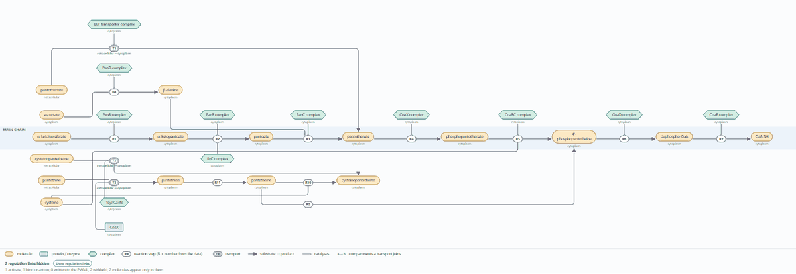
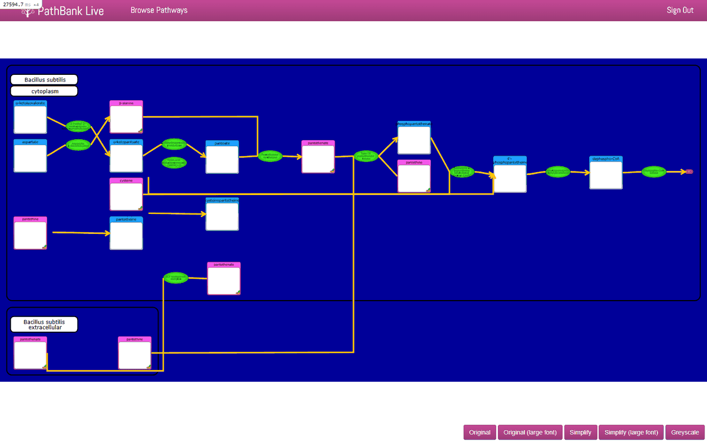
| nodes | 49 |
| node_overlaps | 0 |
| edge_crossings | 5 |
| reading_order_violations | 0 |
| precedence_pairs | 10 |
| labels_too_wide | 0 |
| labels_outside_box | 0 |
| label_node_overlaps | 0 |
| duplicated_compound_locations | 0 |
| enzyme_distance_gt200 | 2 |
| enzymes_drawn | 8 |
| enzyme_distance_max | 666 |
| compartment_boxes | 2 |
| compartment_box_overlaps | 0 |
| unlabeled_compartment_boxes | 0 |
| duplicate_compartment_boxes | 0 |
| aspect_ratio | 2.9 |
| crossings | 10 |
| bends | 18 |
| enzyme_links_gt200 | 0 |
| enzyme_links | 9 |
| enzyme_link_max | 70 |
| node_overlaps | 0 |
| labels_truncated | 0 |
| drawings | 29 |
| imported | True, 4 message(s) |
| compounds created/written | 14/15 |
| proteins created/written | 17/17 |
| protein_complexes created/written | 11/12 |
| reactions created/written | 11/11 |
| transports created/written | 2/3 |
| compound_locations created/written | 20/20 |
| protein_locations created/written | ?/29 |